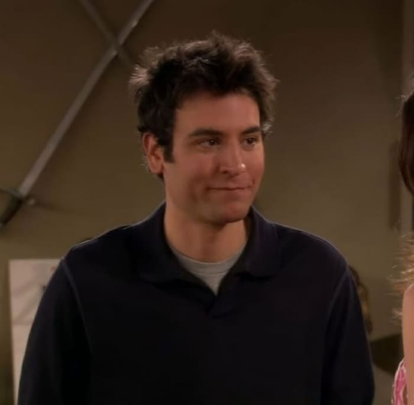
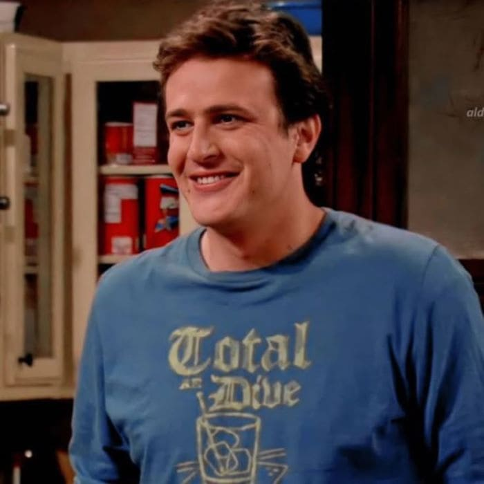

Este grupo tiene unas conexiones entre ellos un poco enredadas... Para saber más, interactúa con el sitio haciendo click en el personaje sobre el que desees saber más!

Ted y Marshall tienen una amistad muy fuerte que comenzó cuando se conocieron en la Universidad Wesleyan. Son compañeros de cuarto y se apoyan mutuamente en todas las etapas de sus vidas. Marshall es la persona en la que Ted siempre confía y con quien comparte sus aspiraciones y sueños.
Lily es la mejor amiga de Ted y la esposa de Marshall. Su relación es cercana y fraternal; Lily siempre se preocupa por el bienestar de Ted y lo apoya en sus decisiones amorosas y profesionales. Ambos comparten una conexión profunda y se consideran familia.
Barney y Ted se conocen en el bar MacLaren's, y rápidamente se convierten en grandes amigos. Barney, conocido por su estilo de vida desenfadado y mujeriego, a menudo influye en Ted para que se divierta más y experimente nuevas aventuras. Aunque tienen personalidades muy diferentes, su amistad se basa en la lealtad y el respeto mutuo.
La relación de Ted con Robin es una de las más importantes de la serie. Ted se enamora de Robin desde el primer momento y tienen una relación intermitente a lo largo de la serie. A pesar de sus altibajos, Ted y Robin comparten una conexión profunda y sincera, y su amistad perdura a lo largo de los años.


La amistad entre Marshall y Ted comenzó en la Universidad Wesleyan, donde compartían habitación. Su relación es muy cercana y fraternal, basada en la confianza y el apoyo mutuo. Marshall siempre está dispuesto a ofrecer un oído atento y consejos sinceros a Ted, especialmente en sus aventuras amorosas y profesionales.
Marshall y Lily se conocieron en la universidad y rápidamente se enamoraron. Su relación es uno de los pilares de la serie, caracterizada por el amor, la comprensión y la cooperación. A lo largo de la serie, enfrentan juntos muchos desafíos, pero siempre encuentran la manera de fortalecerse mutuamente.
Aunque Marshall y Barney tienen personalidades muy diferentes, su amistad se basa en la camaradería y el humor. Marshall a menudo se sorprende y se divierte con las extravagantes aventuras y consejos de Barney, pero también actúa como una influencia estabilizadora en su vida.
Marshall y Robin comparten una relación de amistad y respeto mutuo. Aunque no son tan cercanos como Marshall y Ted, Marshall siempre está dispuesto a apoyar a Robin en sus decisiones y desafíos, y Robin valora la honestidad y la lealtad de Marshall.


Lily y Ted comparten una amistad profunda y fraternal desde sus días en la Universidad Wesleyan, donde conocieron a Marshall. Lily es una de las principales confidentes de Ted y siempre lo apoya en sus decisiones amorosas y profesionales. Su relación está basada en la confianza y el cariño mutuo, lo que hace que ambos se consideren familia.
Marshall y Lily se conocieron en la universidad y rápidamente se enamoraron. Su relación es uno de los pilares de la serie, caracterizada por el amor, la comprensión y la cooperación. A lo largo de la serie, enfrentan juntos muchos desafíos, pero siempre encuentran la manera de fortalecerse mutuamente.
A pesar de sus diferencias, Lily y Barney desarrollan una relación de amistad y respeto mutuo. Lily actúa como una influencia estabilizadora en la vida de Barney, desafiándolo a ser una mejor persona. Por su parte, Barney valora la honestidad y el sentido del humor de Lily, y siempre está dispuesto a apoyarla cuando lo necesita.
La relación de Lily y Robin es una de las más cercanas de la serie. Ambas comparten una amistad profunda y se apoyan mutuamente en sus decisiones y desafíos personales. Juntas, enfrentan muchos momentos difíciles, pero siempre encuentran la manera de fortalecerse.
La relación de Barney y Ted es una de las más complejas de la serie. Comienzan como amigos, pero eventualmente desarrollan una relación romántica llena de altibajos. A pesar de sus diferencias, ambos comparten una conexión profunda y una química innegable. Barney y Ted finalmente se casan, aunque su matrimonio enfrenta desafíos que prueban su amor y compromiso.
Barney y Marshall tienen una relación de amistad basada en el respeto mutuo. Aunque sus personalidades son muy diferentes, ambos se apoyan en sus decisiones y desafíos, y comparten momentos de camaradería y diversión.
A pesar de sus diferencias, Lily y Barney desarrollan una relación de amistad y respeto mutuo. Lily actúa como una influencia estabilizadora en la vida de Barney, desafiándolo a ser una mejor persona. Por su parte, Barney valora la honestidad y el sentido del humor de Lily, y siempre está dispuesto a apoyarla cuando lo necesita.
La relación de Barney y Robin es compleja y llena de altibajos. Comienzan como amigos, pero eventualmente desarrollan una relación romántica que culmina en matrimonio. Aunque su matrimonio enfrenta desafíos significativos, ambos comparten una conexión profunda y una química innegable que los une a lo largo de la serie.


La relación de Robin y Ted es una de las más importantes de la serie. Ted se enamora de Robin desde el primer momento y, a lo largo de la serie, tienen una relación intermitente llena de altibajos. Aunque su relación romántica no siempre funciona, su amistad perdura y ambos comparten una conexión profunda y sincera.
Robin y Marshall tienen una relación amistosa y de respeto mutuo. Aunque no son tan cercanos como otros personajes, Marshall siempre está dispuesto a apoyar a Robin en sus decisiones y desafíos. Robin valora la honestidad y lealtad de Marshall, y ambos comparten momentos de camaradería y apoyo.
Robin y Lily son mejores amigas y confidentes cercanas. Su relación se basa en la confianza, el apoyo y la comprensión mutua. Lily siempre está dispuesta a escuchar y ofrecer consejos a Robin, y Robin aprecia la sinceridad y la lealtad de Lily. Juntas, enfrentan muchos desafíos personales y profesionales, fortaleciendo su amistad a lo largo de los años.
La relación de Robin y Barney es compleja y llena de altibajos. Comienzan como amigos, pero eventualmente desarrollan una relación romántica que culmina en matrimonio. Aunque su matrimonio enfrenta desafíos significativos, ambos comparten una conexión profunda y una química innegable que los une a lo largo de la serie.